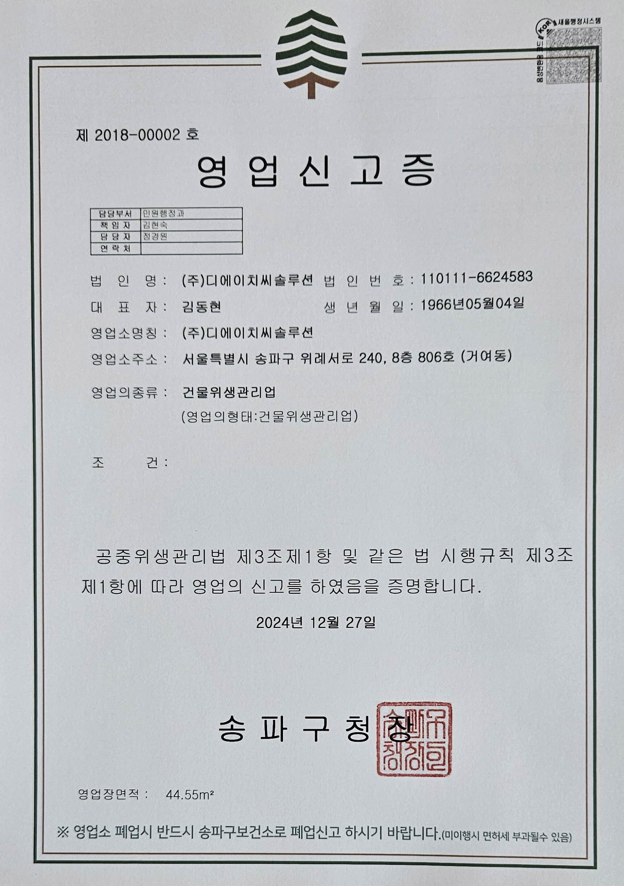
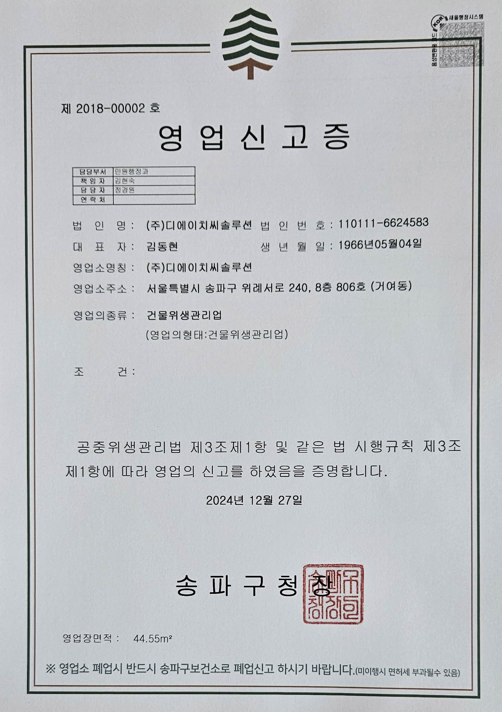

전문장비로 원스톱 위생 솔루션
위생가전 소독관리
제안 드립니다
직원들의 건강과 복지, 그리고 기업의 생산성은 안전한 근무 환경에서 시작됩니다. 다중이용 시설인 기업 사무실에서 공동으로 사용하는 위생 가전은 "보이지 않는 감염 위험 구역"입니다.
위생 가전의 현실
기업의 위생가전은 사용빈도가 하루 수백 회로 가정용 가전에 비해 오염 가속도가 빠르고 세균 번식에 취약합니다
- 오염 가속: 냉장고, 정수기, 제빙기 내부 등에서 곰팡이와 물때 발생 속도 증가.
- 감염 위험: 전자레인지, 키보드, 비데 노즐 등에서 식중독균 및 전염성 병원균 노출 위험 상존.
관리의 한계
대부분의 기업이 단순 외관 청소에 그치거나 관리 시기를 놓쳐 근본적인 위생 문제가 해결되지 않고 내부 오염원이 방치됩니다.

제빙기의 소독 전후

커피머신의 소독 전후

냉장고의 소독 전후

전자렌지의 소독 전후

화장실 비데의 소독 전후

사무실 책상의 소독 전후

인덕션의 소독 전후
중점 관리 대상 가전
당사의 전문 관리가 필요한 주요 대상입니다.
- 냉장고, 전자레인지, 제빙기, 정수기, 커피머신, 비데, 칫솔살균기, 에어컨, 공기청정기, 사무용품 , PC/키보드 등
회사 소개
주식회사 디에이치씨솔루션은 20년간 위생 기술 선도력, 국내 최대 규모의 인력풀, 그리고 AI 시스템을 결합하여, 기업 위생 관리에 가장 빠르고 정확하며 신뢰할 수 있는 미래형 솔루션을 제공합니다.
클린메이트는 디에이치씨솔루션의 가전소독전문 브랜드명입니다.
회사정보
대표이사: 김동현 / 설립일: 2018년 1월 16일
사업 분야: 건물위생관리업 (영업신고증 보유), 위생가전 전문 청소/소독, 정기 케어 시스템 운영
본사 주소: 서울특별시 송파구 충민로 66, F동 8087호 (문정동, 가든파이브라이프)
연락처: 1666-1757 / 이메일: dhc-solution@naver.com
 

인력풀
전국 200여 명의 위생가전 전문 관리사와 장비 엔지니어를 보유하고 있습니다.
- 업계 최대 규모의 인력풀로 수도권 외 전국 서비스망 구축.
- 모든 관리사는 제조사 정식 기술 교육을 이수한 엔지니어 출신.
- 화재보험 및 생산물배상책임보험 가입 (최대 3억원)으로 안전 담보.

전문 관리사 교육 현장
기술력
특허 받은 친환경 스팀 멸균 기술과 객관적인 ATP/내시경 진단 기술을 결합하여 근원적인 위생 문제를 해결합니다.
- 고온 스팀 멸균: 130℃ 이상의 고온 스팀으로 미세 세균 및 바이러스를 99.9% 살균.
- 정밀 진단 장비: ATP 측정기 및 초정밀 내시경 카메라를 활용한 과학적 진단.
- 데이터 기반 관리: AI 기반 데이터 처리 기술을 적용하여 정확하고 신뢰성 높은 데이터를 제공합니다.

본사 기술진
AI 도입
단순 사후 처리를 넘어, 문제가 생기기 전 사전 차단하는 미래형 위생 관리 시스템을 구축하고 있습니다 (투자 유치 중).
- 실시간 감시: 건물 곳곳에 설치된 모듈이 해충, 위생, 곰팡이, 온도, 습도, 가스, 누수 등의 거주 환경 정보를 실시간 수집.
- 예측 기반 관리: 개별 휴대폰 앱 실시간 모니터링 및 본사 중앙 관제실의 24시간 집중 감시를 통해 문제 발생 전 예측 및 즉각적인 현장 대응을 실현합니다.

AI 환경 감시 모듈
클린메이트 실적
클린메이트는 국내 유수의 대기업 및 공공기관과 10년 이상 꾸준히 계약을 유지하고 있습니다. 재계약율 90% 이상의 독보적인 결과는 당사의 서비스 품질을 명확하게 증명합니다.
주요 계약 유지 현황
- IT · 플랫폼 기업: 네이버, 카카오, 쿠팡 등 대형 플랫폼 기업 사옥의 핵심 위생 가전(냉장고, 제빙기) 소독 전문 서비스를 10년 이상 장기 구독 중.
- 대기업 및 금융기관: 엄격한 기준을 요구하는 대기업 본사 사옥 및 금융기관 지점의 청결 유지 시설 관리 전문 수행.
- 공공기관 및 연구소: 정부 및 공공기관의 까다로운 위생 점검 기준을 완벽하게 충족하며 정기 위탁 운영.
당사의 서비스는 위생 관리 만족도 95% 이상, 서비스 품질 A등급을 지속적으로 유지하고 있습니다.

냉장고 위생 관리 솔루션
1. 정밀 진단 및 오염 측정
냉장고는 가장 다양한 종류의 세균이 서식하며 식중독 위험이 높은 곳입니다. 육안으로 확인되지 않는 오염 지점을 정밀하게 파악합니다.
- 위생 등급 진단: 내부 온도 및 습도 환경 분석.
- ATP 측정: 문손잡이, 선반 등 '고빈도 접촉 부위'의 미세 세균 오염도(RLU)를 객관적인 수치로 측정.
- 내시경 검사: 고무패킹 틈새 등 구조상 단순 청소가 어려운 부분의 곰팡이/세균 오염 상태 확인.

2. 완전 분해 및 집중 세척
제조사 출신 전문 인력이 투입되어 냉장고의 핵심 부품을 안전하게 분리합니다. 오염 가속도가 높은 부위를 집중적으로 세척합니다.
- 주요 세척 대상: 고무패킹, 선반, 내부 벽면 및 응축기(Condenser, 필요 시).
- 오염원 제거: 부패한 음식물 잔여물, 기름때, 곰팡이 등 유기물 오염원을 전용 세척 도구로 1차 제거.
- 특수 세척: 고무패킹 틈새 등 세균이 번식하기 쉬운 취약 부위에 대한 특수 세척 공법 적용.

3. 멸균 및 살균 소독
세척 후 남아있을 수 있는 미세 세균과 바이러스를 근원적으로 멸균하여 식중독 위험을 원천 차단합니다.
- 살균제 적용: 식품 첨가물 등급의 안전한 살균제를 사용하여 식품 접촉 부위 소독. 잔류 성분 걱정 없음.
- 고온 스팀 살균: 분해된 부품과 내부 벽면에 130℃ 이상의 고온 스팀을 분사하여 곰팡이 포자 및 미세 세균 멸균.
- 광촉매 코팅: 유해 세균 재번식 방지를 위한 친환경 광촉매(피톤치드/UV살균) 코팅 적용.

4. 기능 복원 및 점검
청소 이후 냉장고의 핵심 기능이 정상적으로 복원되는지 점검하고 에너지 효율을 향상시킵니다.
- 냉각 기능 점검: 냉장/냉동실 내부 온도 정상화 여부 확인.
- 응축기 청소: 냉각 효율 저하의 주범인 응축기(Condenser)의 먼지를 제거하여 전력 소모 및 고장률 감소.
- 냄새 제거: 악취 발생 원인을 제거하여 쾌적한 사용 환경 복원.

5. 사후 보고 및 관리
과학적인 수치로 작업 결과를 증명하고, 정기 관리 시스템을 통해 위생 수준을 지속적으로 유지합니다.
- ATP 측정 보고서: 작업 전/후 오염도 수치를 비교한 최종 보고서 발행.
- 관리 가이드 제공: 음식물 보관 및 주기적인 내부 청소 가이드라인 제공.
- 정기 관리: 월간/분기별 정기 관리 플랜 제안을 통한 지속적인 위생 안전망 구축.

제빙기 위생 관리 솔루션
1. 정밀 진단 및 오염 측정
물을 사용하는 제빙기는 바이오필름과 수인성 세균 번식에 매우 취약합니다. 급수 시스템의 오염도를 정밀하게 진단합니다.
- 내시경 진단: 급수 라인, 저수조, 제빙부 등 육안으로 확인 불가능한 내부의 물때, 슬라임, 바이오필름 오염 상태 확인.
- ATP 측정: 얼음 배출구, 얼음 삽 등 '고빈도 접촉 부위'의 미세 세균 오염도(RLU) 측정.
- 수질 분석 (선택): 급수 상태(수질/유량)를 점검하여 물의 위생 안전성 진단.

2. 완전 분해 및 집중 세척
제조사 전문가의 역량으로 제빙 시스템의 핵심 부품을 분해하여, 물과 접촉하는 모든 부위의 바이오필름을 제거합니다.
- 주요 세척 대상: 저수조, 제빙판, 급수 라인, 배수 라인, 공기 흡입 필터.
- 친환경 세척제: 미국 환경보호국(EPA)의 승인을 받은 식품 안전 등급의 전용 세척제 사용.
- 곰팡이 제거: 슬라임 형태로 번식하는 곰팡이와 물때를 강력하게 제거하여 얼음 생성 시스템의 위생 복원.

3. 멸균 및 살균 소독
세척만으로 제거되지 않은 수인성 세균과 바이러스를 고온 멸균하여, 얼음의 위생 안전성을 확보합니다.
- 오존(O3) 살균: 강력한 살균력을 가진 오존수를 이용하여 저수조 및 급수 시스템 내부를 소독.
- 고온 스팀 살균: 분해 부품과 얼음 저장 공간에 130℃ 이상의 고온 스팀을 분사하여 멸균.
- 잔류 성분 안전: 인체에 무해한 소독 공법을 적용하여 잔류 성분이 남지 않도록 완벽하게 헹굼 처리.

4. 기능 복원 및 점검
위생 관리를 넘어 기계 자체의 작동 효율을 높이고 고장률을 사전에 예방합니다.
- 필터 교체 및 점검: 정수 필터 및 공기 필터의 상태를 점검하고 필요 시 교체 (선택 사항).
- 얼음 생성 효율 복원: 물때로 인한 센서 오작동 및 제빙판 효율 저하 문제를 해결하여 제빙 속도 정상화.
- 장비 수명 연장: 전문적인 점검을 통해 주요 부품의 고장 시점을 예측하여 사전 차단.

5. 사후 보고 및 관리
정량적인 결과를 기반으로 위생 안전성을 증명하고, 정기 관리 프로그램을 통해 HACCP 기준을 충족시킵니다.
- ATP 측정 보고서: 작업 전/후 오염도 수치를 비교한 최종 보고서 발행.
- 관리 가이드 제공: 정수 필터 교체 주기 및 일상 청소 관리 가이드라인 제공.
- 정기 관리: 제빙기 고장률 70% 감소를 목표로 하는 월간/분기별 정기 관리 플랜 제안.

전자레인지 위생 관리 솔루션
1. 정밀 진단 및 오염 측정
음식물 찌꺼기가 세균의 영양 공급원이 되는 전자레인지는 잦은 접촉으로 교차 감염 위험이 높습니다.
- ATP 측정: 문손잡이, 작동 버튼 등 '고빈도 접촉 부위'의 미세 세균 오염도(RLU)를 객관적인 수치로 측정.
- 내시경 검사: 내부 천장, 마그네트론(발열체) 주변 등 음식물 오염이 누적된 사각지대 정밀 확인.
- 온도/습도 진단: 내부 잔여 수분 및 증발 상태를 점검하여 곰팡이 발생 가능성 진단.

2. 완전 분해 및 집중 세척
내부 부품(회전판, 내부 덮개 등)을 분리하고, 묵은 음식물 찌꺼기와 탄화된 오염원을 전용 세척 기술로 근본적으로 제거합니다.
- 주요 세척 대상: 회전판, 회전축, 내부 벽면 및 천장, 도어 패킹, 통풍구.
- 전용 세척: 탄화된 찌꺼기나 기름때를 안전하고 효과적으로 분해하는 전용 세척제 사용.
- 냄새 유발원 제거: 냄새를 유발하는 내부 오염원과 잔여물을 완벽하게 세척.

3. 멸균 및 살균 소독
세척 후 남아있는 각종 세균, 바이러스 및 식중독균(대장균, 황색포도상구균 등)을 멸균합니다.
- 고온 스팀 멸균: 내부 전체에 130℃ 이상의 고온 스팀을 분사하여 화학약품 없이 멸균 처리.
- UV 살균: 세척이 완료된 내부 공간에 고강도 UV(자외선) 살균 시스템을 적용하여 잔여 세균 완벽 제거.
- 친환경 살균: 인체에 무해한 식품 첨가물 등급의 살균제를 문손잡이 등에 적용.

4. 기능 복원 및 점검
청결 유지와 함께 전자레인지의 작동 안전성을 점검하여 임직원의 안전한 사용 환경을 보장합니다.
- 기능 복원: 분리 부품 재조립 및 회전판 작동 여부 점검.
- 외관 청결 및 안전 점검: 내부 찌꺼기 제거를 통해 과열 위험을 줄이고 작동 상태를 점검.
- 장비 수명 연장: 내부 오염 방지를 통해 장비 수명을 연장하고 교체 비용을 절감.

5. 사후 보고 및 관리
투명한 위생 보고서 발행과 정기 관리 컨설팅으로 최적의 위생 상태를 지속적으로 유지합니다.
- ATP 측정 보고서: 작업 전/후 오염도 수치를 비교한 최종 보고서 발행.
- 사용자 가이드 제공: 음식물 덮개 사용 등 일상적인 위생 관리법 교육.
- 정기 관리: 정기적인 방문 관리를 통한 지속적인 위생 안전망 구축.
기술과 인증
크린메이트는 끊임없이 기술을 연구하고 검증합니다.
특허 및 인증 현황
당사는 환경, 위생, 소독 관련 국내외 주요 인증 및 특허를 다수 보유하고 있습니다.
주요 협력사
신뢰를 바탕으로 함께 성장하는 파트너들과 함께합니다.
파트너사 로고
원스톱 상담 견적
5가지 질문에 답하고, 맞춤형 위생 관리 견적을 간편하게 받아보세요.
1. 관리받기를 원하시는 품목을 선택해주세요.
2. 필요한 관리 종류를 선택해주세요.
3. 서비스를 적용할 공간 종류를 선택해주세요.
4. 서비스 받고자 하는 지역을 선택해주세요. (도/광역시)
5. 세부 도시/구역을 선택해주세요.
견적 요청 준비 완료